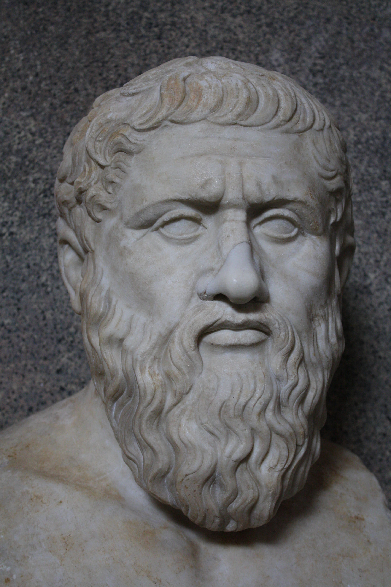

Plato
Plato is a Greek philosopher and if responsible for the founding of The Academy in Athens.) He built on the thoughts of his teacher Socrates and his Academy is considered to be the first University in the world.
"The monumental “Republic” is a parallel exploration of the soul of a nation and of an individual. In both, Plato finds a three-part hierarchy between rulers, auxiliaries and citizens, and between reason, emotion and desire. Just as reason should reign supreme in the individual, so should a wise ruler control a society. Only those with wisdom (ideally a sort of “philosopher-king”) are able to discern the true nature of things. The experiences of the lower tiers of the state and of the soul are—as Plato’s famous analogy has it—related to true knowledge the way the shadows on the wall of a cave are related to, yet wholly different from, the forms that cast them." - history.com